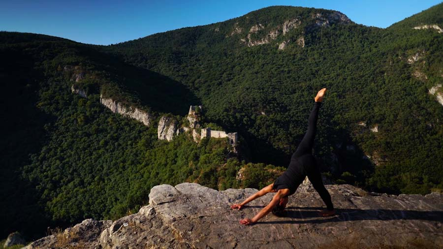
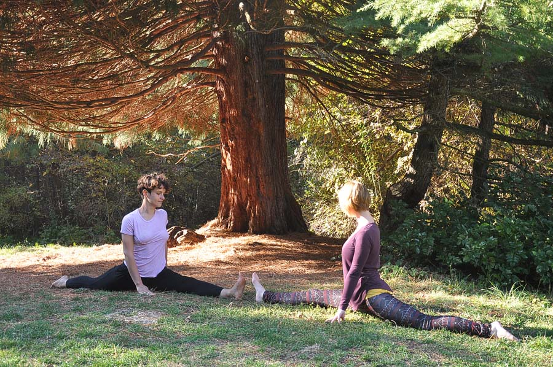
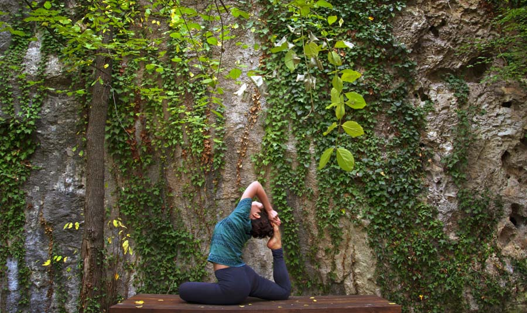

joga u Sokobanji
Šta je hatha joga?
(Reč hatha na sanskritu znači snaga.)
Hatha joga je širok pojam. Može se reći da je oblik kulture duha i tela. Najprihvatljivija definicija hathe je pokret. U skladu sa tim, svaki joga čas na kome se izvode asane (joga položaji) je hatha čas. Svrha hatha joge je da vežbač osvesti disanje i poveže sa samim sobom. Hatha joga izgrađuje fleksibilnost i snagu ne samo tela već i uma. Ovo je stil vežbanja koji balansira i otvara čitavo telo. Vežbe se izvode lagano, nadovezujući se jedna na drugu u opuštajućem ritmu. Cilj je povećanje gipkosti tela, jačanje mišica i povećanje snage uz istovremeno uklanjanje fizičke i psihičke napetosti. Rezultat je duboka relaksacija. Svaki čas obuhvata početnu relaksaciju i centriranje, vežbe i položaje zagrevanja, izvođenje joga položaja (asana), upoznavanje tehnika disanja (pranajame), a zavšava se jogičkom relaksacijom (joga nidra). Časovi su za sve one koji nikada nisu probali ali i za one koji vežbaju. Brzinu i način vežbanja možete prilagoditi svojim mogućnostima, bez ikakvog osećaja takmičenja ili žurbe.


O Sarga studiju
(Reč Sarga na sanskritu znači priroda.)
Povežite se sa prirodom i uz pomoć joga tehnika otkrijte svoju. Vođeni časovi hatha joge održavaju se na otvorenom tokom toplijih meseci. Cilj ovakve joga prakse je dublje povezivanje sa prirodom (univerzalnim elementima – zemljom, vodom, vatrom, vazduhom i etrom) i životnom energijom. Sama reč joga na sankritu znaci ujediniti, povezati. Većina asana reflektuje prirodne elemente. Postavljajući svoje telo u položaj drveta učimo se uzemljivanju. Disanje u ciklusu talasa daje nam osecaj harmonije i vanvremenske povezanosti sa univerzumom.
Instruktor
(Aleksandra Janković)
Ja sam Aleksandra Janković, sertifikovana instruktorka joge. Jogom se bavim od 2012. godine. Otkrila sam dobrobiti joge vežbajući rekreativno, a ona je ubrzo postala sastavni deo mog života. Kurs za instruktora joge završila sam 2016. godine u školi Vidya Yoga učitelja Dragana Lončara u Beogradu, koja stavlja težište na tradicionalnu hatha jogu. Svoje znanje o jogi unapređujem pohađanjem seminara i radionica. Joga praksu nastavljam kontinuirano i kroz druge stilove joge — od duboke restorativne prakse do dinamične ashtange. Volim da šetam i provodim vreme u prirodi i smatram da su joga i priroda savršen spoj. Po struci sam istoričarka umetnosti, a u slobodno vreme volim da putujem i čitam.
